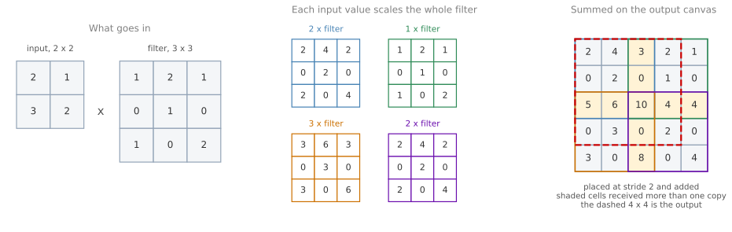

media/deep-learning/semantic-segmentation/make-labels.py.Semantic Segmentation with U-Net
deep-learning
convolutional-neural-networks
computer-vision
semantic-segmentation
u-net
transpose-convolution
Labeling every pixel rather than drawing a box, the transpose convolution that grows a representation back, and the U-Net that puts the two together.
Three tasks sit on a ladder. Object recognition answers what is in a picture, such as whether it shows a cat. Object detection goes a step further and reports objects with rectangles, which is what Bounding Box Predictions with YOLO does, producing a box, a class, and a confidence for each object it finds. For a great many applications that is enough.
A box is a coarse answer, though. It says a car is somewhere inside this rectangle, and the rectangle inevitably contains road, sky, and pieces of other cars. Semantic segmentation asks the harder question, which is not where the object roughly is but which exact pixels belong to it. The answer is a label for every pixel in the image.
Pixel Labels
Start with the simplest version of the task, separating a car from everything else. Every pixel gets one of two labels, 1 if it is part of the car and 0 if it is not. The output is therefore not a class, and not four coordinates, but a grid of labels the same height and width as the input.
A richer version uses more classes. Label the car 1, the buildings 2, and the road 3, and the algorithm has to color in the whole picture, deciding for each pixel which of the three it belongs to.
The middle panel is everything a detector has to say about this street. Seven rectangles, each holding a vehicle, and each also holding a strip of road, a slice of sky, and pieces of whatever is parked behind. The right panel is everything a segmentation network has to say about it, which is one label at each of the 921 600 pixels, so the boundary of a car follows the car and the road is marked wherever it is genuinely visible between them.
Those labels are predictions rather than human annotation, and the difference shows. The queue of vehicles near the center of the frame merges into a single region instead of separating into individual cars, because semantic segmentation labels a pixel with its class and has no notion of which car a pixel belongs to.
Formally, for an image of height \(h\) and width \(w\) the output has a prediction at all \(h \times w\) positions. With \(n_{\text{classes}}\) classes, the final layer produces a vector of \(n_{\text{classes}}\) numbers at each pixel, and taking the largest entry of that vector assigns the pixel to a class. An output of shape \(h \times w \times 3\) is therefore three numbers per pixel, not three pixels.
This is worth doing because several applications need exactly it, and a box would be useless for them.
A self driving car needs to know which pixels are drivable surface. Drawing a rectangle around the road is meaningless, since a road is not rectangular and the rectangle would include the pavement and the cars parked on it. Marking every pixel that can be driven over is the useful answer, and some self driving teams use segmentation for precisely that.
In medical imaging the same shift matters more. Given a chest X-ray, a diagnosis is useful, but an outline of exactly which pixels are lung, which are heart, and which are collarbone is more useful still, because it makes irregularities easier to spot and helps surgeons plan. Novikov et al. (2018) do exactly that, giving each structure its own color. Given a brain MRI, outlining a tumor by hand is slow and tedious work, and an algorithm that segments it automatically saves a radiologist a great deal of time and gives a surgical team something to plan against. That is the result reported by Dong et al. (2017), and the architecture behind it is the one built up in the rest of this page.
Review Questions
1. How is semantic segmentation more detailed than object detection?
TipAnswer
Object detection identifies an object and places a rectangle around it, so the answer is a handful of numbers per object. Semantic segmentation labels every pixel, so it can trace the exact boundary of an object, a road, or a building. A box says roughly where something is, while a segmentation says which pixels it is made of.
1. Why can the output of an ordinary classifier not serve as a segmentation map?
TipAnswer
Because of its shape. A classifier reduces an image to a short vector, one number per class, and along the way the height and width of its activations shrink steadily. A segmentation map needs a prediction at every pixel position, so it has to be as tall and as wide as the input image. Getting there means the network has to grow the representation back up after shrinking it, which no ordinary classifier does.
1. A segmentation network for three classes outputs a volume of shape \(h \times w \times 3\). What sits at one position of that volume, and how does it become a label?
TipAnswer
Three numbers, one per class, describing how strongly that pixel belongs to each. The label is the position of the largest of the three, which is an \(\arg\max\) over the class axis. Doing that at every one of the \(h \times w\) positions turns the volume into a single map of labels, which is what gets displayed as a colored overlay.
Transpose Convolutions
An ordinary convolution shrinks a representation, or at best keeps it the same size. Segmentation needs the opposite at some point, an operation that takes a small grid of activations and produces a larger one. The transpose convolution is that operation.
Its mechanics invert the usual convolution in one specific way. A normal convolution places the filter on the input, multiplies element by element, and sums to produce one output number. A transpose convolution places the filter on the output. It takes one input number, multiplies the entire filter by that single number, and writes the scaled filter into the output grid.
Because the input positions step across the output by the stride, and the filter is wider than the stride, neighboring placements land on overlapping regions. Where placements overlap, their values are added.
Carrying that through with actual numbers is the quickest way to be sure of it. Take a 2 by 2 input, a 3 by 3 filter, and a stride of 2, and ask for a 4 by 4 output.

Follow one number through. The input entry in the top left is 2, so the whole filter is multiplied by 2, giving \([[2, 4, 2], [0, 2, 0], [2, 0, 4]]\), and that 3 by 3 block is written into the top left of the output canvas. The next input entry along is 1, so the filter is multiplied by 1 and written two columns further across, because the stride is 2. Since the block is 3 wide and the step is only 2, its left column lands on top of the previous block’s right column, and those two values are added rather than one replacing the other. Repeating for the remaining two input entries fills the canvas, and keeping the top left 4 by 4 gives the answer.
The shaded cells in the last panel are the seven positions that received more than one contribution. The cell holding 10 is the busiest, and it is worth checking by hand: it takes 4 from the block scaled by 2, 1 from the block scaled by 1, 3 from the block scaled by 3, and 2 from the last block, and \(4 + 1 + 3 + 2 = 10\).
These numbers are not taken on trust. The same input, filter, stride, and output shape passed to tf.nn.conv2d_transpose return exactly the 4 by 4 grid inside the dashed rectangle.
One question is worth answering before moving on, which is why bother with this rather than simply scaling the image up. The filter values here are learned, like any other convolutional filter. A fixed rule for enlargement, such as repeating each pixel or interpolating between them, treats every region the same way. A learned filter can decide how a compact representation should be spread into a larger one, which is what makes the operation useful inside a network that has to reconstruct fine detail.
Review Questions
1. What happens when two scaled copies of the filter write to the same output position?
TipAnswer
The contributions are added. A transpose convolution does not choose between placements or overwrite one with another, it accumulates every contribution landing on a position. In the worked example seven of the sixteen output cells receive more than one copy, and the cell holding 10 receives four of them, \(4 + 1 + 3 + 2\).
1. Why does a stride of 2 with a 3 by 3 filter guarantee overlap?
TipAnswer
Because the filter is wider than the step. Each placement covers three columns of the output, while consecutive placements start only two columns apart, so the third column of one placement lands on the first column of the next. Overlap disappears only when the stride is at least as large as the filter, which is also when the operation stops blending neighboring contributions.
1. Why is a learned transpose convolution preferable to simply enlarging the activations with a fixed rule?
TipAnswer
Because a fixed rule cannot adapt. Repeating pixels or interpolating between them applies the same recipe everywhere, regardless of what the activations mean. The filter in a transpose convolution is trained like any other, so the network can learn how a compact representation should be spread out to reconstruct the detail that matters for the task, which for segmentation means the boundary between one class and the next.
Compression, Expansion, and Skip Connections
With the enlarging operation in hand, the shape of the architecture follows from what the task needs.
The first half of the network is an ordinary ConvNet with its last few layers taken off. A recognition network ends by collapsing its activations into a single vector of class scores, and that ending is the one part a segmentation network has no use for. Everything before it is kept. Convolutions and pooling layers steadily reduce the height and width of the activations while the number of channels grows, so the representation becomes small and deep. That is exactly what recognizing content requires, and it is also lossy in a specific way. A small deep volume can carry the information that something cat like is present in the lower right part of the image, without carrying where the edge of the cat runs.
The second half undoes the shrinking. Transpose convolutions grow the height and width back up, step by step, and the number of channels comes back down as they do, so the descent is retraced in reverse until the activations are as large as the input image and a prediction can be made at every pixel.
An architecture built from those two halves alone would work poorly, and the reason is the loss just described. By the time the representation reaches the bottom, the fine spatial detail is gone, so the expanding half is asked to reconstruct a precise boundary from information that no longer contains it.
The fix is the skip connection, and it is the reason the architecture is worth a name. Activations from a layer on the contracting side are copied directly across to the matching layer on the expanding side, skipping everything in between. The later layer then has two sources of information at once.
The high level context arrives up through the expanding path. It is low resolution but semantically rich, and it knows there is a cat in this region.
The fine detail arrives across the skip connection. It is high resolution and semantically thin, and it knows how much fur like texture sits at this exact pixel.
Deciding whether one particular pixel belongs to the cat needs both, which is why the two are concatenated and handed to the convolutions that follow.
Review Questions
1. What is lost as pooling makes the activation grid smaller, and why does that matter for segmentation?
TipAnswer
Precise spatial detail. A small deep volume can represent that a cat is roughly in one region, but it cannot represent where the boundary of the cat falls, because there are no longer enough positions to say so. For classification that loss costs nothing, since the answer is one label for the whole image. For segmentation it is fatal on its own, because the answer needs a decision at every pixel, and that is what the skip connections restore.
1. What two kinds of information meet at a skip connection, and why is neither enough alone?
TipAnswer
Low resolution context from the expanding path, which knows what is in the region but not exactly where, and high resolution detail copied from the contracting path, which knows the texture at a pixel but not what object it belongs to. Deciding whether one pixel belongs to the cat needs both at once, so the two are combined and passed through further convolutions. Context alone gives blurry blobs, and detail alone gives edges with no idea what they enclose.
Full Architecture
Putting all of it together gives the shape the architecture is named after. Drawn with the contracting path descending on the left and the expanding path rising on the right, the diagram looks like the letter U.
Reading it from the input, the input is an image of shape \(h \times w \times 3\), the three channels being red, green, and blue. Convolutions, each followed by a ReLU, process it while max pooling occasionally halves the height and width. The channel count grows as the spatial size shrinks, so the volume gets thinner and deeper as it descends, until the bottom of the U holds a small, deep, context rich representation.
Coming back up, each step is a transpose convolution that enlarges the height and width while thinning the volume back down, followed by a skip connection that copies the matching activations from the left side and concatenates them, followed by ordinary convolutions with ReLU that mix the two sources together. That triple repeats until the activations are back to \(h \times w\), where a couple more ordinary convolutions run at full resolution.
The last operation is a \(1 \times 1\) convolution, which looks at one pixel position at a time across all channels and maps it to \(n_{\text{classes}}\) numbers. The output is therefore \(h \times w \times n_{\text{classes}}\), a vector of class scores at every pixel, and an \(\arg\max\) over that vector at each position produces the segmentation map. For three classes the output is \(h \times w \times 3\), and for ten classes it is \(h \times w \times 10\), with the height and width unchanged in both cases.
The architecture is due to Ronneberger, Fischer, and Brox (2015), who were working on biomedical image segmentation at the time. The ideas turned out to transfer well beyond that, and U-Net is now one of the standard architectures for segmentation of any kind.
Review Questions
1. Why do the activations become deeper as they become smaller on the contracting path?
TipAnswer
Because the two changes come from different layers. Pooling reduces the height and width, while each convolutional layer can use more filters than the last, which increases the channel count. The combination trades spatial resolution for representational depth, giving a compact volume that describes what is present rather than exactly where it is. The expanding path runs the trade the other way, growing the height and width while the channel count falls.
1. What does the final \(1 \times 1\) convolution do, and why is that the right last step?
TipAnswer
It maps the channels at each pixel position to one score per class, turning an \(h \times w \times \text{channels}\) volume into an \(h \times w \times n_{\text{classes}}\) volume. A \(1 \times 1\) filter looks at a single position across all channels and mixes them without touching neighboring pixels, which is exactly what is wanted for a per-pixel decision at this point, since the spatial mixing has already been done by the convolutions before it.
1. Why is the network drawn as a U rather than as a straight line of layers?
TipAnswer
Because the drawing puts the shrinking half on the way down and the growing half on the way up, so the spatial size of the activations traces a U, small at the bottom and full size at both ends. Drawing it that way also puts each skip connection on a horizontal line between two layers of equal size, which is what makes the copying across visible in the picture.
References
- Dong, H., Yang, G., Liu, F., Mo, Y., & Guo, Y. (2017). Automatic brain tumor detection and segmentation using U-Net based fully convolutional networks. In Medical Image Understanding and Analysis (pp. 506-517). Springer. https://doi.org/10.1007/978-3-319-60964-5_44
- Novikov, A. A., Lenis, D., Major, D., Hladuvka, J., Wimmer, M., & Buhler, K. (2018). Fully convolutional architectures for multiclass segmentation in chest radiographs. IEEE Transactions on Medical Imaging, 37(8), 1865-1876. https://doi.org/10.1109/TMI.2018.2806086
- Ronneberger, O., Fischer, P., & Brox, T. (2015). U-Net: Convolutional networks for biomedical image segmentation. In Medical Image Computing and Computer-Assisted Intervention, MICCAI 2015, Lecture Notes in Computer Science (Vol. 9351, pp. 234-241). Springer. https://doi.org/10.1007/978-3-319-24574-4_28